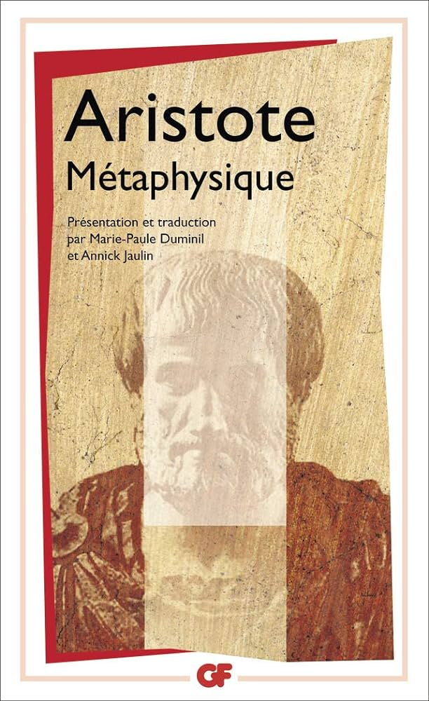

Bienvenue sur notre plateforme d'apprentissage en ligne
Explorez une variété de livres et développez votre culture.
Découvrir les livresLivres en vedette
Les Paradis artificiels
Le Style Baudelairien a encore frappé. En effet, ce livre présente "Les Paradis Artificiels", une œuvre poétique explorant les expériences altérées par les drogues. Baudelaire offre une méditation profonde sur la créativité, la perception et la quête de l'idéal, tout en transcendant les simples récits sur les drogues.

Métaphysique
Ce livre est une prose réfléchie du Stagirite, alias Aristote, qui plonge dans une quête philosophique, explorant les concepts abstraits de l'être, de la substance et de la causalité avec une élégance littéraire, transcendant les barrières entre la pensée et l'émotion.